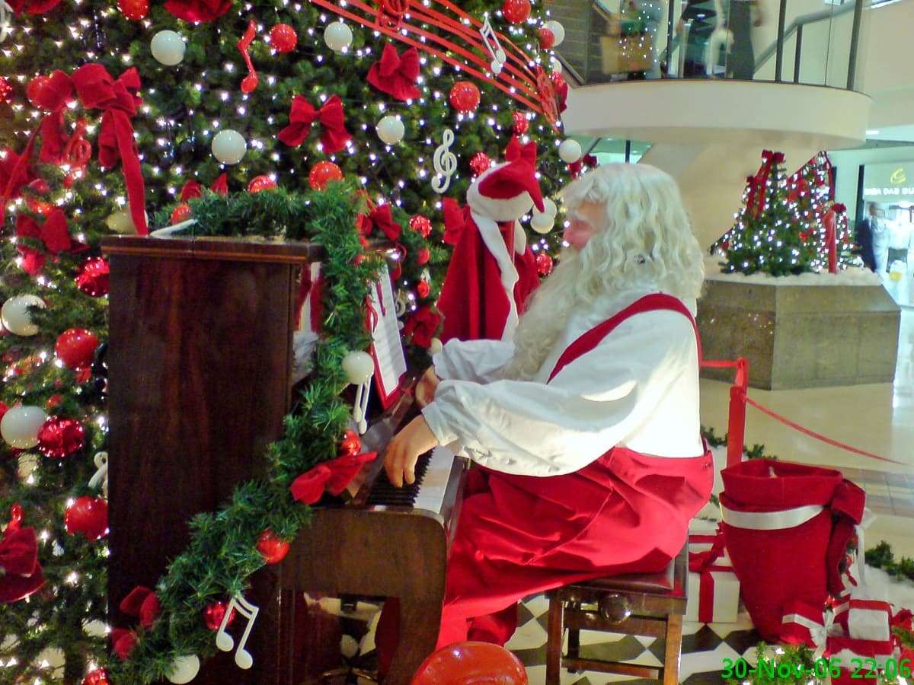

TRADIÇÕES PRINCIPAIS
As principais tradições de Natal incluem a decoração de casas e árvores de Natal. A decoração natalina, tem como objetivo principal criar um ambiente acolhedor, festivo e de comunhão, fortalecendo os laços familiares e celebrando a data.
O Papai Noel simboliza a generosidade e o espírito de bondade do Natal, representando a figura de um velhinho que traz presentes para as crianças. Sua lenda tem origens históricas em São Nicolau, um bispo generoso do século IV, e em figuras pagãs do inverno, como a do deus nórdico Odin. A imagem moderna do Papai Noel foi popularizada nos Estados Unidos e o nome "Papai Noel" é uma adaptação francesa de "Noël", que significa "Natal".
 As tradições musicais de Natal incluem o canto de corais de músicas tradicionais, a prática do caroling (canto de canções natalinas em grupo, de porta em porta) e a escuta de canções populares e religiosas que celebram o período. Músicas como "Noite Feliz", "Jingle Bells" e canções de artistas brasileiros como Simone e Roupa Nova são parte essencial das celebrações.
As tradições musicais de Natal incluem o canto de corais de músicas tradicionais, a prática do caroling (canto de canções natalinas em grupo, de porta em porta) e a escuta de canções populares e religiosas que celebram o período. Músicas como "Noite Feliz", "Jingle Bells" e canções de artistas brasileiros como Simone e Roupa Nova são parte essencial das celebrações.
As tradições musicais de Natal incluem o canto de corais de músicas tradicionais, a prática do caroling (canto de canções natalinas em grupo, de porta em porta) e a escuta de canções populares e religiosas que celebram o período. Músicas como "Noite Feliz", "Jingle Bells" e canções de artistas brasileiros como Simone e Roupa Nova são parte essencial das celebrações.